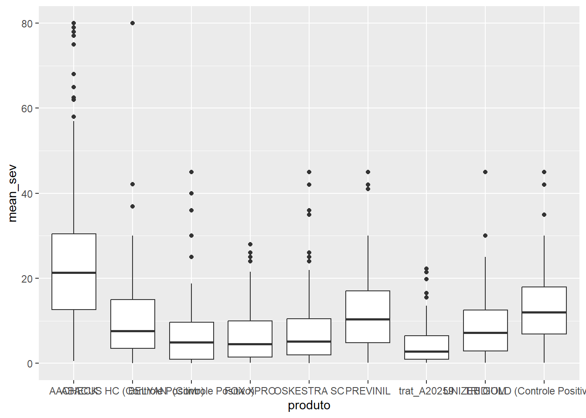
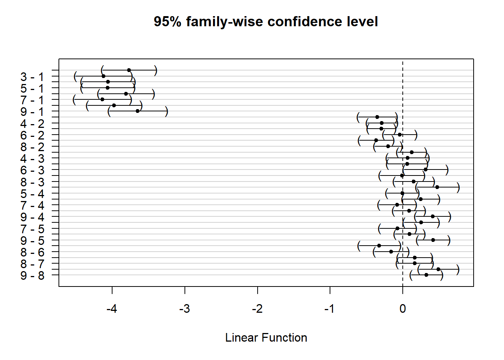

library(gsheet)
library(tidyverse)
library(broom)
library(tidyr)
library(metafor)
library(multcomp)
library(emmeans)Meta-analysis for the variable severity
Packages
Import the data
dat1 = gsheet2tbl("https://docs.google.com/spreadsheets/d/1joo0WaR7yNWZavGPbwQMjiFPpWHErtGL/edit?gid=1485993259#gid=1485993259")
dat1 |> ggplot(aes(produto, mean_sev)) +
geom_boxplot()
outliers <- dat1 %>%
filter(produto == "trat_A20259") %>%
group_by(produto, bloco) %>%
mutate(outlier = mean_sev < quantile(mean_sev, 0.25) - 1.5 * IQR(mean_sev) |
mean_sev > quantile(mean_sev, 0.75) + 1.5 * IQR(mean_sev)) %>%
filter(outlier) %>%
dplyr::select(ensaio_1, mean_sev)
print(outliers)# A tibble: 7 × 4
# Groups: produto, bloco [4]
produto bloco ensaio_1 mean_sev
<chr> <dbl> <dbl> <dbl>
1 trat_A20259 3 25 13.6
2 trat_A20259 4 25 16.5
3 trat_A20259 1 43 19.8
4 trat_A20259 2 43 21.4
5 trat_A20259 3 43 22.3
6 trat_A20259 4 43 22.3
7 trat_A20259 3 50 15.5ANOVA for Each Trial/Study
# Converting variables to factors
dat1$bloco = as.factor(dat1$bloco) # Block as a factor
dat1$produto = as.factor(dat1$produto) # fungicide as a factor
dat1$ensaio_1 = as.factor(dat1$ensaio_1) # Trial as a factor
str(dat1)spc_tbl_ [1,748 × 9] (S3: spec_tbl_df/tbl_df/tbl/data.frame)
$ municipio: chr [1:1748] "Anápolis" "Anápolis" "Anápolis" "Anápolis" ...
$ bloco : Factor w/ 4 levels "1","2","3","4": 1 1 1 1 1 1 1 2 2 2 ...
$ ensaio_1 : Factor w/ 78 levels "5","6","7","8",..: 39 39 39 39 39 39 39 39 39 39 ...
$ produto : Factor w/ 9 levels "AACHECK","ABACUS HC (Controle Positivo)",..: 1 2 3 4 5 8 7 1 2 3 ...
$ ano : num [1:1748] 2020 2020 2020 2020 2020 2020 2020 2020 2020 2020 ...
$ estado : chr [1:1748] "GO" "GO" "GO" "GO" ...
$ regiao : chr [1:1748] "Centro-Oeste" "Centro-Oeste" "Centro-Oeste" "Centro-Oeste" ...
$ mean_sev : num [1:1748] 33 10 13 10 10 13 13 30 12 10 ...
$ mean_prod: num [1:1748] 5910 7570 7510 8310 8450 ...
- attr(*, "spec")=
.. cols(
.. municipio = col_character(),
.. bloco = col_double(),
.. ensaio_1 = col_double(),
.. produto = col_character(),
.. ano = col_double(),
.. estado = col_character(),
.. regiao = col_character(),
.. mean_sev = col_double(),
.. mean_prod = col_double()
.. )
- attr(*, "problems")=<externalptr> # Performing ANOVA to obtain Sum of Squares (Sq) and Mean Squares (MeanSq)
dat2 <- dat1 %>%
filter(mean_sev != "NA")|>
group_by(ensaio_1) %>%
dplyr::select(ensaio_1, produto, bloco, mean_sev) %>%
nest(data = c(produto, bloco, mean_sev)) %>%
dplyr::mutate(
aov_results = map(data, ~ tidy(aov(mean_sev ~ produto + bloco, data = .x)))
) %>%
unnest(aov_results) %>%
filter(term == "Residuals")|>
dplyr::select(1,6)Calculating the mean and adjusted variance
#First: Merge the Original Spreadsheet (dat1) with the Spreadsheet Containing the ANOVA Results;
dat3 <- left_join(dat1, dat2) |>
group_by(municipio,regiao, ensaio_1, produto, ano) %>%
summarise(mean_sev = mean(mean_sev+0.1), #severity mean
mean_V = mean(meansq), #SQ mean
n = n()) |>
mutate(log_sev = log(mean_sev)) #Mean of the transformed severity
#Calculating adjusted variance of severity
dat3$vi_sev = with(dat3, mean_V / (n * mean_sev^2))Meta-analysis
Fitting different models
Differences in structures were tested, and the one that best fit was the unstructured. The others are commented out.
net_arm_UN_first <- rma.mv(
log_sev,
vi_sev,
mods = ~ produto,
method = "ML",
random = list( ~ produto | factor(ensaio_1)),
struct = "HCS",
control = list(optimizer = "nlm"),
data = dat3)
summary(net_arm_UN_first)
Multivariate Meta-Analysis Model (k = 445; method: ML)
logLik Deviance AIC BIC AICc
-306.4493 1613.2329 650.8986 728.7620 652.6868
Variance Components:
outer factor: factor(ensaio_1) (nlvls = 78)
inner factor: produto (nlvls = 9)
estim sqrt k.lvl fixed
tau^2.1 0.7859 0.8865 78 no
tau^2.2 0.8148 0.9027 65 no
tau^2.3 1.0767 1.0376 33 no
tau^2.4 0.9735 0.9867 49 no
tau^2.5 0.9379 0.9685 60 no
tau^2.6 0.9177 0.9580 34 no
tau^2.7 0.9305 0.9646 35 no
tau^2.8 0.8601 0.9274 53 no
tau^2.9 0.6800 0.8246 38 no
rho 0.9148 no
level
tau^2.1 AACHECK
tau^2.2 ABACUS HC (Controle Positivo)
tau^2.3 BELYAN (Controle Positivo)
tau^2.4 FOX XPRO
tau^2.5 OSKESTRA SC
tau^2.6 PREVINIL
tau^2.7 trat_A20259
tau^2.8 TRIDIUM
tau^2.9 UNIZEB GOLD (Controle Positivo, multissítio)
rho
Test for Residual Heterogeneity:
QE(df = 436) = 55256.5347, p-val < .0001
Test of Moderators (coefficients 2:9):
QM(df = 8) = 823.1008, p-val < .0001
Model Results:
estimate se zval
intrcpt 2.8850 0.1007 28.6478
produtoABACUS HC (Controle Positivo) -0.8804 0.0497 -17.7189
produtoBELYAN (Controle Positivo) -1.2339 0.0818 -15.0837
produtoFOX XPRO -1.1689 0.0633 -18.4557
produtoOSKESTRA SC -1.1748 0.0576 -20.4106
produtoPREVINIL -0.9230 0.0681 -13.5446
produtotrat_A20259 -1.2486 0.0736 -16.9612
produtoTRIDIUM -1.0853 0.0563 -19.2910
produtoUNIZEB GOLD (Controle Positivo, multissítio) -0.7601 0.0583 -13.0287
pval ci.lb ci.ub
intrcpt <.0001 2.6876 3.0823
produtoABACUS HC (Controle Positivo) <.0001 -0.9778 -0.7830
produtoBELYAN (Controle Positivo) <.0001 -1.3942 -1.0736
produtoFOX XPRO <.0001 -1.2931 -1.0448
produtoOSKESTRA SC <.0001 -1.2876 -1.0620
produtoPREVINIL <.0001 -1.0566 -0.7895
produtotrat_A20259 <.0001 -1.3929 -1.1043
produtoTRIDIUM <.0001 -1.1955 -0.9750
produtoUNIZEB GOLD (Controle Positivo, multissítio) <.0001 -0.8745 -0.6458
intrcpt ***
produtoABACUS HC (Controle Positivo) ***
produtoBELYAN (Controle Positivo) ***
produtoFOX XPRO ***
produtoOSKESTRA SC ***
produtoPREVINIL ***
produtotrat_A20259 ***
produtoTRIDIUM ***
produtoUNIZEB GOLD (Controle Positivo, multissítio) ***
---
Signif. codes: 0 '***' 0.001 '**' 0.01 '*' 0.05 '.' 0.1 ' ' 1 #salvando
m1 <- data.frame(cbind(
(net_arm_UN_first$b),
(net_arm_UN_first$ci.lb),
(net_arm_UN_first$ci.ub),
(net_arm_UN_first$se)))
m1 = m1
names (m1) = c("log_sev", "sev_lw", "sev_up", "se")
m1 <- m1 |>
mutate(fungicide = c("check", "ABACUSHC", "BAS75302F", "FOX XPRO", "OSKESTRASC", "PREVINIL", "A20259", "TRIDIUM", "UNIZEBGOLD"))
m1 <- m1 |>
dplyr::select(fungicide, log_sev, sev_lw, sev_up,se)
library(writexl)
#write_xlsx(m1, "results_log_Sev.xlsx")Pairwise comparison
#The glht() function is used to perform multiple comparisons between the groups adjusted by the model
net_arm_UN_comp <-
summary(glht(
model = net_arm_UN_first,
linfct = cbind(contrMat(rep(1, 9), type = "Tukey")) ))
net_arm_UN_comp
Simultaneous Tests for General Linear Hypotheses
Fit: rma.mv(yi = log_sev, V = vi_sev, mods = ~produto, random = list(~produto |
factor(ensaio_1)), struct = "HCS", data = dat3, method = "ML",
control = list(optimizer = "nlm"))
Linear Hypotheses:
Estimate Std. Error z value Pr(>|z|)
2 - 1 == 0 -3.765334 0.118775 -31.701 <0.001 ***
3 - 1 == 0 -4.118857 0.124592 -33.059 <0.001 ***
4 - 1 == 0 -4.053876 0.117879 -34.390 <0.001 ***
5 - 1 == 0 -4.059782 0.116520 -34.842 <0.001 ***
6 - 1 == 0 -3.807976 0.123028 -30.952 <0.001 ***
7 - 1 == 0 -4.133568 0.125541 -32.926 <0.001 ***
8 - 1 == 0 -3.970207 0.119517 -33.219 <0.001 ***
9 - 1 == 0 -3.645086 0.129101 -28.234 <0.001 ***
3 - 2 == 0 -0.353524 0.085017 -4.158 <0.001 ***
4 - 2 == 0 -0.288542 0.065770 -4.387 <0.001 ***
5 - 2 == 0 -0.294449 0.060432 -4.872 <0.001 ***
6 - 2 == 0 -0.042642 0.071895 -0.593 0.9996
7 - 2 == 0 -0.368234 0.075921 -4.850 <0.001 ***
8 - 2 == 0 -0.204873 0.059376 -3.450 0.0150 *
9 - 2 == 0 0.120247 0.063046 1.907 0.5910
4 - 3 == 0 0.064981 0.092164 0.705 0.9986
5 - 3 == 0 0.059075 0.088075 0.671 0.9990
6 - 3 == 0 0.310882 0.096471 3.223 0.0322 *
7 - 3 == 0 -0.014710 0.098800 -0.149 1.0000
8 - 3 == 0 0.148651 0.088234 1.685 0.7412
9 - 3 == 0 0.473771 0.093309 5.077 <0.001 ***
5 - 4 == 0 -0.005906 0.070507 -0.084 1.0000
6 - 4 == 0 0.245900 0.080772 3.044 0.0548 .
7 - 4 == 0 -0.079692 0.082645 -0.964 0.9878
8 - 4 == 0 0.083669 0.069501 1.204 0.9518
9 - 4 == 0 0.408789 0.075987 5.380 <0.001 ***
6 - 5 == 0 0.251806 0.076846 3.277 0.0267 *
7 - 5 == 0 -0.073785 0.079906 -0.923 0.9908
8 - 5 == 0 0.089576 0.065480 1.368 0.9024
9 - 5 == 0 0.414696 0.069942 5.929 <0.001 ***
7 - 6 == 0 -0.325592 0.091728 -3.550 0.0108 *
8 - 6 == 0 -0.162231 0.075747 -2.142 0.4257
9 - 6 == 0 0.162889 0.075678 2.152 0.4191
8 - 7 == 0 0.163361 0.079439 2.056 0.4855
9 - 7 == 0 0.488481 0.086675 5.636 <0.001 ***
9 - 8 == 0 0.325120 0.068855 4.722 <0.001 ***
---
Signif. codes: 0 '***' 0.001 '**' 0.01 '*' 0.05 '.' 0.1 ' ' 1
(Adjusted p values reported -- single-step method) plot(net_arm_UN_comp)
library(emmeans)
library(multcomp)
meta <- emmprep(net_arm_UN_first)
emmeans_meta <- emmeans(meta, ~ produto, type = "response")
cld_result <- data.frame(cld(emmeans_meta, decreasing = TRUE, Letters = LETTERS))
cld_result produto emmean SE df asymp.LCL
7 AACHECK 2.884954 0.1007043 Inf 2.687577
3 UNIZEB GOLD (Controle Positivo, multissítio) 2.124821 0.1020948 Inf 1.924719
5 ABACUS HC (Controle Positivo) 2.004574 0.1054163 Inf 1.797962
4 PREVINIL 1.961932 0.1201447 Inf 1.726452
8 TRIDIUM 1.799701 0.1110315 Inf 1.582083
6 FOX XPRO 1.716032 0.1200428 Inf 1.480752
2 OSKESTRA SC 1.710125 0.1154649 Inf 1.483818
9 BELYAN (Controle Positivo) 1.651050 0.1346971 Inf 1.387049
1 trat_A20259 1.636340 0.1239388 Inf 1.393424
asymp.UCL .group
7 3.082331 A
3 2.324923 B
5 2.211186 B
4 2.197411 BC
8 2.017319 CD
6 1.951311 CD
2 1.936432 D
9 1.915052 D
1 1.879255 D efficacy_index <- data.frame(cbind(
(1 - exp(net_arm_UN_first$b)) * 100,
(1 - exp(net_arm_UN_first$ci.lb)) * 100,
(1 - exp(net_arm_UN_first$ci.ub)) * 100))
# #Organize the data.frame
efficacy_index = efficacy_index
names (efficacy_index) = c("efficacy", "efficacy_up", "efficacy_lw")
efficacy_index <- efficacy_index |>
mutate(fungicide = c("check", "ABACUSHC", "BAS75302F", "FOX XPRO", "OSKESTRASC", "PREVINIL", "A20259", "TRIDIUM", "UNIZEBGOLD")) |>
filter(fungicide != "check") |>
dplyr::select(fungicide, efficacy, efficacy_lw, efficacy_up)
efficacy_index fungicide efficacy
produtoABACUS HC (Controle Positivo) ABACUSHC 58.53746
produtoBELYAN (Controle Positivo) BAS75302F 70.88462
produtoFOX XPRO FOX XPRO 68.92984
produtoOSKESTRA SC OSKESTRASC 69.11280
produtoPREVINIL PREVINIL 60.26834
produtotrat_A20259 A20259 71.30978
produtoTRIDIUM TRIDIUM 66.21836
produtoUNIZEB GOLD (Controle Positivo, multissítio) UNIZEBGOLD 53.23956
efficacy_lw efficacy_up
produtoABACUS HC (Controle Positivo) 54.29658 62.38482
produtoBELYAN (Controle Positivo) 65.82143 75.19775
produtoFOX XPRO 64.82324 72.55702
produtoOSKESTRA SC 65.42410 72.40798
produtoPREVINIL 54.59083 65.23600
produtotrat_A20259 66.85670 75.16455
produtoTRIDIUM 62.28042 69.74518
produtoUNIZEB GOLD (Controle Positivo, multissítio) 47.57479 58.29224library(readr)
write_xlsx(efficacy_index, "efficacy_res.xlsx")Disease pressure
Median
#linha de base
library(janitor)
AACHECK = dat1 |> filter(produto == "AACHECK")
summary(AACHECK) municipio bloco ensaio_1 produto
Length:304 1:78 5 : 4 AACHECK :304
Class :character 2:78 6 : 4 ABACUS HC (Controle Positivo): 0
Mode :character 3:78 7 : 4 BELYAN (Controle Positivo) : 0
4:70 8 : 4 FOX XPRO : 0
9 : 4 OSKESTRA SC : 0
10 : 4 PREVINIL : 0
(Other):280 (Other) : 0
ano estado regiao mean_sev
Min. :2016 Length:304 Length:304 Min. : 0.60
1st Qu.:2019 Class :character Class :character 1st Qu.:12.68
Median :2021 Mode :character Mode :character Median :21.35
Mean :2021 Mean :23.45
3rd Qu.:2022 3rd Qu.:30.50
Max. :2024 Max. :80.00
mean_prod
Min. : 3414
1st Qu.: 5062
Median : 6124
Mean : 6536
3rd Qu.: 7729
Max. :12361
NA's :186 med_sev <- dat3 %>%
mutate(sev_check_class = case_when(
mean_sev < 21 ~ "low",
mean_sev >= 21 ~ "high"))
med_sev %>%
tabyl(produto, sev_check_class) produto high low
AACHECK 43 35
ABACUS HC (Controle Positivo) 7 58
BELYAN (Controle Positivo) 1 32
FOX XPRO 3 46
OSKESTRA SC 2 58
PREVINIL 3 31
trat_A20259 1 34
TRIDIUM 3 50
UNIZEB GOLD (Controle Positivo, multissítio) 5 33model_mm <- rma.mv(
log_sev ,
vi_sev,
mods = ~ produto * factor(sev_check_class),
method = "ML",
random = list( ~ produto | factor(ensaio_1)),
struct = "HCS",
control = list(optimizer = "nlm"),
data = med_sev)
anova(model_mm, btt = 5:6)
Test of Moderators (coefficients 5:6):
QM(df = 2) = 16.9409, p-val = 0.0002 summary(model_mm)
Multivariate Meta-Analysis Model (k = 445; method: ML)
logLik Deviance AIC BIC AICc
-282.6962 1565.7268 621.3925 736.1385 625.2963
Variance Components:
outer factor: factor(ensaio_1) (nlvls = 78)
inner factor: produto (nlvls = 9)
estim sqrt k.lvl fixed
tau^2.1 0.6387 0.7992 78 no
tau^2.2 0.6848 0.8275 65 no
tau^2.3 0.9652 0.9825 33 no
tau^2.4 0.8226 0.9070 49 no
tau^2.5 0.8405 0.9168 60 no
tau^2.6 0.8680 0.9317 34 no
tau^2.7 0.7967 0.8926 35 no
tau^2.8 0.7927 0.8903 53 no
tau^2.9 0.6040 0.7772 38 no
rho 0.9155 no
level
tau^2.1 AACHECK
tau^2.2 ABACUS HC (Controle Positivo)
tau^2.3 BELYAN (Controle Positivo)
tau^2.4 FOX XPRO
tau^2.5 OSKESTRA SC
tau^2.6 PREVINIL
tau^2.7 trat_A20259
tau^2.8 TRIDIUM
tau^2.9 UNIZEB GOLD (Controle Positivo, multissítio)
rho
Test for Residual Heterogeneity:
QE(df = 427) = 29490.0831, p-val < .0001
Test of Moderators (coefficients 2:18):
QM(df = 17) = 970.5456, p-val < .0001
Model Results:
estimate
intrcpt 2.9976
produtoABACUS HC (Controle Positivo) -0.4736
produtoBELYAN (Controle Positivo) -0.6112
produtoFOX XPRO -0.5566
produtoOSKESTRA SC -0.6313
produtoPREVINIL -0.6308
produtotrat_A20259 -0.5461
produtoTRIDIUM -0.7534
produtoUNIZEB GOLD (Controle Positivo, multissítio) -0.4902
factor(sev_check_class)low -0.2493
produtoABACUS HC (Controle Positivo):factor(sev_check_class)low -0.3280
produtoBELYAN (Controle Positivo):factor(sev_check_class)low -0.5213
produtoFOX XPRO:factor(sev_check_class)low -0.5292
produtoOSKESTRA SC:factor(sev_check_class)low -0.4323
produtoPREVINIL:factor(sev_check_class)low -0.1815
produtotrat_A20259:factor(sev_check_class)low -0.6202
produtoTRIDIUM:factor(sev_check_class)low -0.2120
produtoUNIZEB GOLD (Controle Positivo, multissítio):factor(sev_check_class)low -0.1662
se
intrcpt 0.0954
produtoABACUS HC (Controle Positivo) 0.1181
produtoBELYAN (Controle Positivo) 0.3341
produtoFOX XPRO 0.1774
produtoOSKESTRA SC 0.2217
produtoPREVINIL 0.1858
produtotrat_A20259 0.2918
produtoTRIDIUM 0.1807
produtoUNIZEB GOLD (Controle Positivo, multissítio) 0.1351
factor(sev_check_class)low 0.0664
produtoABACUS HC (Controle Positivo):factor(sev_check_class)low 0.1330
produtoBELYAN (Controle Positivo):factor(sev_check_class)low 0.3449
produtoFOX XPRO:factor(sev_check_class)low 0.1908
produtoOSKESTRA SC:factor(sev_check_class)low 0.2310
produtoPREVINIL:factor(sev_check_class)low 0.2015
produtotrat_A20259:factor(sev_check_class)low 0.3022
produtoTRIDIUM:factor(sev_check_class)low 0.1923
produtoUNIZEB GOLD (Controle Positivo, multissítio):factor(sev_check_class)low 0.1523
zval
intrcpt 31.4095
produtoABACUS HC (Controle Positivo) -4.0090
produtoBELYAN (Controle Positivo) -1.8294
produtoFOX XPRO -3.1372
produtoOSKESTRA SC -2.8470
produtoPREVINIL -3.3951
produtotrat_A20259 -1.8715
produtoTRIDIUM -4.1700
produtoUNIZEB GOLD (Controle Positivo, multissítio) -3.6286
factor(sev_check_class)low -3.7566
produtoABACUS HC (Controle Positivo):factor(sev_check_class)low -2.4666
produtoBELYAN (Controle Positivo):factor(sev_check_class)low -1.5116
produtoFOX XPRO:factor(sev_check_class)low -2.7732
produtoOSKESTRA SC:factor(sev_check_class)low -1.8716
produtoPREVINIL:factor(sev_check_class)low -0.9006
produtotrat_A20259:factor(sev_check_class)low -2.0525
produtoTRIDIUM:factor(sev_check_class)low -1.1026
produtoUNIZEB GOLD (Controle Positivo, multissítio):factor(sev_check_class)low -1.0910
pval
intrcpt <.0001
produtoABACUS HC (Controle Positivo) <.0001
produtoBELYAN (Controle Positivo) 0.0673
produtoFOX XPRO 0.0017
produtoOSKESTRA SC 0.0044
produtoPREVINIL 0.0007
produtotrat_A20259 0.0613
produtoTRIDIUM <.0001
produtoUNIZEB GOLD (Controle Positivo, multissítio) 0.0003
factor(sev_check_class)low 0.0002
produtoABACUS HC (Controle Positivo):factor(sev_check_class)low 0.0136
produtoBELYAN (Controle Positivo):factor(sev_check_class)low 0.1306
produtoFOX XPRO:factor(sev_check_class)low 0.0056
produtoOSKESTRA SC:factor(sev_check_class)low 0.0613
produtoPREVINIL:factor(sev_check_class)low 0.3678
produtotrat_A20259:factor(sev_check_class)low 0.0401
produtoTRIDIUM:factor(sev_check_class)low 0.2702
produtoUNIZEB GOLD (Controle Positivo, multissítio):factor(sev_check_class)low 0.2753
ci.lb
intrcpt 2.8105
produtoABACUS HC (Controle Positivo) -0.7051
produtoBELYAN (Controle Positivo) -1.2661
produtoFOX XPRO -0.9043
produtoOSKESTRA SC -1.0658
produtoPREVINIL -0.9950
produtotrat_A20259 -1.1180
produtoTRIDIUM -1.1075
produtoUNIZEB GOLD (Controle Positivo, multissítio) -0.7550
factor(sev_check_class)low -0.3794
produtoABACUS HC (Controle Positivo):factor(sev_check_class)low -0.5886
produtoBELYAN (Controle Positivo):factor(sev_check_class)low -1.1973
produtoFOX XPRO:factor(sev_check_class)low -0.9031
produtoOSKESTRA SC:factor(sev_check_class)low -0.8851
produtoPREVINIL:factor(sev_check_class)low -0.5765
produtotrat_A20259:factor(sev_check_class)low -1.2125
produtoTRIDIUM:factor(sev_check_class)low -0.5890
produtoUNIZEB GOLD (Controle Positivo, multissítio):factor(sev_check_class)low -0.4646
ci.ub
intrcpt 3.1846
produtoABACUS HC (Controle Positivo) -0.2421
produtoBELYAN (Controle Positivo) 0.0436
produtoFOX XPRO -0.2089
produtoOSKESTRA SC -0.1967
produtoPREVINIL -0.2667
produtotrat_A20259 0.0258
produtoTRIDIUM -0.3993
produtoUNIZEB GOLD (Controle Positivo, multissítio) -0.2254
factor(sev_check_class)low -0.1192
produtoABACUS HC (Controle Positivo):factor(sev_check_class)low -0.0674
produtoBELYAN (Controle Positivo):factor(sev_check_class)low 0.1546
produtoFOX XPRO:factor(sev_check_class)low -0.1552
produtoOSKESTRA SC:factor(sev_check_class)low 0.0204
produtoPREVINIL:factor(sev_check_class)low 0.2135
produtotrat_A20259:factor(sev_check_class)low -0.0280
produtoTRIDIUM:factor(sev_check_class)low 0.1649
produtoUNIZEB GOLD (Controle Positivo, multissítio):factor(sev_check_class)low 0.1323
intrcpt ***
produtoABACUS HC (Controle Positivo) ***
produtoBELYAN (Controle Positivo) .
produtoFOX XPRO **
produtoOSKESTRA SC **
produtoPREVINIL ***
produtotrat_A20259 .
produtoTRIDIUM ***
produtoUNIZEB GOLD (Controle Positivo, multissítio) ***
factor(sev_check_class)low ***
produtoABACUS HC (Controle Positivo):factor(sev_check_class)low *
produtoBELYAN (Controle Positivo):factor(sev_check_class)low
produtoFOX XPRO:factor(sev_check_class)low **
produtoOSKESTRA SC:factor(sev_check_class)low .
produtoPREVINIL:factor(sev_check_class)low
produtotrat_A20259:factor(sev_check_class)low *
produtoTRIDIUM:factor(sev_check_class)low
produtoUNIZEB GOLD (Controle Positivo, multissítio):factor(sev_check_class)low
---
Signif. codes: 0 '***' 0.001 '**' 0.01 '*' 0.05 '.' 0.1 ' ' 1table(med_sev$produto, med_sev$sev_check_class)
high low
AACHECK 43 35
ABACUS HC (Controle Positivo) 7 58
BELYAN (Controle Positivo) 1 32
FOX XPRO 3 46
OSKESTRA SC 2 58
PREVINIL 3 31
trat_A20259 1 34
TRIDIUM 3 50
UNIZEB GOLD (Controle Positivo, multissítio) 5 33#openxlsx::write.xlsx(efficacy_index, here("efficacy_class.xlsx"), colNames = TRUE)#organizando a saida do modelo
library(here)
reg1 = data.frame(model_mm$beta, model_mm$se, model_mm$ci.lb, model_mm$ci.ub) %>%
rownames_to_column("trat") %>%
separate(trat, into = c("lado1", "lado2"), sep = ":") %>%
separate(lado2, into = c("lixo","lado3"),sep = "sev_check_class") %>%
dplyr::select(-lixo) %>%
separate(lado1, into = c("lixo","lado1"),sep = "produto" ) %>%
dplyr::select(-lixo) %>%
filter(lado1 != "NA") %>%
mutate(n = seq(1:16))
names(reg1) = c("fungicide", "class", "mean", "se", "ci.lb", "ci.ub", "n")
reg2 = reg1 %>%
filter(n < 9) %>%
mutate(class = rep("High", length(fungicide)))
reg3 = reg1 %>%
filter(n > 8) %>%
mutate(class = rep("Low", length(fungicide)))
reg4 = rbind(reg2,reg3) #aqui teve que calcular o lower por que o modelo da o lower com base no hight
mean = reg4%>%
group_by(fungicide) %>%
dplyr::select(1:3) %>%
spread(class, mean) %>%
mutate(mean = High + Low) %>%
dplyr::select(1,4)
se = reg4%>%
group_by(fungicide) %>%
dplyr::select(1,2,4) %>%
spread(class, se) %>%
mutate(se = High + Low) %>%
dplyr::select(1,4)
lower = reg4%>%
group_by(fungicide) %>%
dplyr::select(1,2,5) %>%
spread(class, ci.lb) %>%
mutate(lower = High + Low) %>%
dplyr::select(1,4)
upper = reg4%>%
group_by(fungicide) %>%
dplyr::select(1,2,6) %>%
spread(class, ci.ub) %>%
mutate(upper = High + Low) %>%
dplyr::select(1,4)
reg5 = left_join(mean, lower, by= c("fungicide")) %>%
left_join(upper, by = c("fungicide")) %>%
left_join(se, by = c("fungicide")) %>%
mutate(class = rep("Low", length("fungicide"))) %>%
dplyr::select("fungicide", "class", "mean", "lower", "upper", "se")
High = reg4 %>%
filter(class == "High") %>%
dplyr::select(1:6)
names(High) = c("fungicide", "class", "mean","se", "lower", "upper")
reg6 = full_join(High,reg5)
#openxlsx::write.xlsx(reg6, here("sev_baseline.xlsx"), colNames = TRUE)
efficacy_index <- data.frame(cbind(
(1 - exp(reg6$mean)) * 100,
(1 - exp(reg6$lower)) * 100,
(1 - exp(reg6$upper)) * 100),
(reg6$class),(reg6$fungicide))
#openxlsx::write.xlsx(efficacy_index, here("efficacy_class.xlsx"), colNames = TRUE)Design groups
library(janitor)
med_sev1 = med_sev %>%
group_by(ensaio_1) %>%
summarise(produto = paste(produto, collapse=';'))
med_sev1 %>%
tabyl(produto) produto
AACHECK;ABACUS HC (Controle Positivo);BELYAN (Controle Positivo);FOX XPRO;OSKESTRA SC;PREVINIL;trat_A20259
AACHECK;ABACUS HC (Controle Positivo);BELYAN (Controle Positivo);FOX XPRO;OSKESTRA SC;trat_A20259;TRIDIUM
AACHECK;ABACUS HC (Controle Positivo);BELYAN (Controle Positivo);OSKESTRA SC;PREVINIL;TRIDIUM;UNIZEB GOLD (Controle Positivo, multissítio)
AACHECK;ABACUS HC (Controle Positivo);FOX XPRO;OSKESTRA SC;PREVINIL;TRIDIUM;UNIZEB GOLD (Controle Positivo, multissítio)
AACHECK;ABACUS HC (Controle Positivo);FOX XPRO;OSKESTRA SC;trat_A20259;TRIDIUM
AACHECK;ABACUS HC (Controle Positivo);FOX XPRO;PREVINIL;TRIDIUM;UNIZEB GOLD (Controle Positivo, multissítio)
AACHECK;ABACUS HC (Controle Positivo);OSKESTRA SC;UNIZEB GOLD (Controle Positivo, multissítio)
AACHECK;BELYAN (Controle Positivo)
AACHECK;PREVINIL;UNIZEB GOLD (Controle Positivo, multissítio)
n percent
4 0.05128205
16 0.20512821
8 0.10256410
9 0.11538462
15 0.19230769
5 0.06410256
8 0.10256410
5 0.06410256
8 0.10256410table(med_sev1$produto)
AACHECK;ABACUS HC (Controle Positivo);BELYAN (Controle Positivo);FOX XPRO;OSKESTRA SC;PREVINIL;trat_A20259
4
AACHECK;ABACUS HC (Controle Positivo);BELYAN (Controle Positivo);FOX XPRO;OSKESTRA SC;trat_A20259;TRIDIUM
16
AACHECK;ABACUS HC (Controle Positivo);BELYAN (Controle Positivo);OSKESTRA SC;PREVINIL;TRIDIUM;UNIZEB GOLD (Controle Positivo, multissítio)
8
AACHECK;ABACUS HC (Controle Positivo);FOX XPRO;OSKESTRA SC;PREVINIL;TRIDIUM;UNIZEB GOLD (Controle Positivo, multissítio)
9
AACHECK;ABACUS HC (Controle Positivo);FOX XPRO;OSKESTRA SC;trat_A20259;TRIDIUM
15
AACHECK;ABACUS HC (Controle Positivo);FOX XPRO;PREVINIL;TRIDIUM;UNIZEB GOLD (Controle Positivo, multissítio)
5
AACHECK;ABACUS HC (Controle Positivo);OSKESTRA SC;UNIZEB GOLD (Controle Positivo, multissítio)
8
AACHECK;BELYAN (Controle Positivo)
5
AACHECK;PREVINIL;UNIZEB GOLD (Controle Positivo, multissítio)
8 #repete 7 vezes#D1 #conferido
med_sev <- med_sev %>%
group_by(ensaio_1) %>%
mutate(n2 = n()) %>%
filter(n2 != 1)
design1 = med_sev %>%
group_by(ensaio_1) %>%
filter(produto %in% c("AACHECK", "ABACUS HC (Controle Positivo)", "BELYAN (Controle Positivo)", "FOX XPRO", "OSKESTRA SC", "PREVINIL", "trat_A20259")) %>%
mutate(n3 = n()) %>%
mutate(design = rep(1, length(produto))) %>%
filter(n2 == 7) %>%
filter(n3 == 7)
design1# A tibble: 28 × 14
# Groups: ensaio_1 [4]
municipio regiao ensaio_1 produto ano mean_sev mean_V n log_sev vi_sev
<chr> <chr> <fct> <fct> <dbl> <dbl> <dbl> <int> <dbl> <dbl>
1 Cafelând… Sul 22 AACHECK 2018 21.7 9.01 4 3.08 0.00478
2 Cafelând… Sul 22 ABACUS… 2018 10.9 9.01 4 2.39 0.0191
3 Cafelând… Sul 22 BELYAN… 2018 5.82 9.01 4 1.76 0.0664
4 Cafelând… Sul 22 FOX XP… 2018 9.6 9.01 4 2.26 0.0244
5 Cafelând… Sul 22 OSKEST… 2018 8.85 9.01 4 2.18 0.0288
6 Cafelând… Sul 22 PREVIN… 2018 9.12 9.01 4 2.21 0.0271
7 Cafelând… Sul 22 trat_A… 2018 8.2 9.01 4 2.10 0.0335
8 Cafelând… Sul 23 AACHECK 2018 5.65 0.178 4 1.73 0.00140
9 Cafelând… Sul 23 ABACUS… 2018 1.62 0.178 4 0.486 0.0169
10 Cafelând… Sul 23 BELYAN… 2018 0.7 0.178 4 -0.357 0.0910
# ℹ 18 more rows
# ℹ 4 more variables: sev_check_class <chr>, n2 <int>, n3 <int>, design <dbl>#D2 #conferido
design2 = med_sev %>%
group_by(ensaio_1) %>%
filter(produto %in% c("AACHECK", "ABACUS HC (Controle Positivo)", "BELYAN (Controle Positivo)", "FOX XPRO", "OSKESTRA SC", "TRIDIUM", "trat_A20259")) %>%
mutate(n3 = n()) %>%
mutate(design = rep(2, length(produto))) %>%
filter(n2 == 7) %>%
filter(n3 == 7)
design2# A tibble: 112 × 14
# Groups: ensaio_1 [16]
municipio regiao ensaio_1 produto ano mean_sev mean_V n log_sev vi_sev
<chr> <chr> <fct> <fct> <dbl> <dbl> <dbl> <int> <dbl> <dbl>
1 Anápolis Centr… 48 AACHECK 2020 33.4 2.73 4 3.51 6.14e-4
2 Anápolis Centr… 48 ABACUS… 2020 12.4 2.73 4 2.51 4.48e-3
3 Anápolis Centr… 48 BELYAN… 2020 12.1 2.73 4 2.49 4.66e-3
4 Anápolis Centr… 48 FOX XP… 2020 11.4 2.73 4 2.43 5.30e-3
5 Anápolis Centr… 48 OSKEST… 2020 11.1 2.73 4 2.41 5.54e-3
6 Anápolis Centr… 48 trat_A… 2020 11.8 2.73 4 2.47 4.86e-3
7 Anápolis Centr… 48 TRIDIUM 2020 14.1 2.73 4 2.65 3.43e-3
8 Arapongas Sul 27 AACHECK 2019 4.95 0.0929 4 1.60 9.47e-4
9 Arapongas Sul 27 ABACUS… 2019 0.975 0.0929 4 -0.0253 2.44e-2
10 Arapongas Sul 27 BELYAN… 2019 0.45 0.0929 4 -0.799 1.15e-1
# ℹ 102 more rows
# ℹ 4 more variables: sev_check_class <chr>, n2 <int>, n3 <int>, design <dbl>#D3 #conferido
design3 = med_sev %>%
group_by(ensaio_1) %>%
filter(produto %in% c("AACHECK", "ABACUS HC (Controle Positivo)", "FOX XPRO", "OSKESTRA SC", "PREVINIL","TRIDIUM", "UNIZEB GOLD (Controle Positivo, multissítio)")) %>%
mutate(n3 = n()) %>%
mutate(design = rep(3, length(produto))) %>%
filter(n2 == 7) %>%
filter(n3 == 7)
design3# A tibble: 63 × 14
# Groups: ensaio_1 [9]
municipio regiao ensaio_1 produto ano mean_sev mean_V n log_sev vi_sev
<chr> <chr> <fct> <fct> <dbl> <dbl> <dbl> <int> <dbl> <dbl>
1 Cafelând… Sul 66 AACHECK 2023 13.4 3.54 4 2.59 4.97e-3
2 Cafelând… Sul 66 ABACUS… 2023 3.85 3.54 4 1.35 5.98e-2
3 Cafelând… Sul 66 FOX XP… 2023 5.1 3.54 4 1.63 3.41e-2
4 Cafelând… Sul 66 OSKEST… 2023 3.1 3.54 4 1.13 9.22e-2
5 Cafelând… Sul 66 PREVIN… 2023 4.1 3.54 4 1.41 5.27e-2
6 Cafelând… Sul 66 TRIDIUM 2023 4.1 3.54 4 1.41 5.27e-2
7 Cafelând… Sul 66 UNIZEB… 2023 2.6 3.54 4 0.956 1.31e-1
8 Campo Mo… Sul 65 AACHECK 2023 40.5 2.93 4 3.70 4.47e-4
9 Campo Mo… Sul 65 ABACUS… 2023 10.1 2.93 4 2.31 7.18e-3
10 Campo Mo… Sul 65 FOX XP… 2023 11.6 2.93 4 2.45 5.47e-3
# ℹ 53 more rows
# ℹ 4 more variables: sev_check_class <chr>, n2 <int>, n3 <int>, design <dbl>#D4 #conferido
design4 = med_sev %>%
group_by(ensaio_1) %>%
filter(produto %in% c("AACHECK", "ABACUS HC (Controle Positivo)", "FOX XPRO", "PREVINIL","TRIDIUM", "UNIZEB GOLD (Controle Positivo, multissítio)")) %>%
mutate(n3 = n()) %>%
mutate(design = rep(4, length(produto))) %>%
filter(n2 == 6) %>%
filter(n3 == 6)
design4# A tibble: 30 × 14
# Groups: ensaio_1 [5]
municipio regiao ensaio_1 produto ano mean_sev mean_V n log_sev vi_sev
<chr> <chr> <fct> <fct> <dbl> <dbl> <dbl> <int> <dbl> <dbl>
1 Guarapua… Sul 73 AACHECK 2024 17.6 11.9 4 2.87 0.00962
2 Guarapua… Sul 73 ABACUS… 2024 5.38 11.9 4 1.68 0.103
3 Guarapua… Sul 73 FOX XP… 2024 3.12 11.9 4 1.14 0.305
4 Guarapua… Sul 73 PREVIN… 2024 6.62 11.9 4 1.89 0.0679
5 Guarapua… Sul 73 TRIDIUM 2024 6.5 11.9 4 1.87 0.0706
6 Guarapua… Sul 73 UNIZEB… 2024 7.62 11.9 4 2.03 0.0513
7 Lavras Sudes… 75 AACHECK 2024 10.1 17.9 4 2.31 0.0439
8 Lavras Sudes… 75 ABACUS… 2024 10.1 17.9 4 2.31 0.0439
9 Lavras Sudes… 75 FOX XP… 2024 5.1 17.9 4 1.63 0.172
10 Lavras Sudes… 75 PREVIN… 2024 7.6 17.9 4 2.03 0.0775
# ℹ 20 more rows
# ℹ 4 more variables: sev_check_class <chr>, n2 <int>, n3 <int>, design <dbl>#D5 conferido
design5 = med_sev %>%
group_by(ensaio_1) %>%
filter(produto %in% c("AACHECK", "ABACUS HC (Controle Positivo)","BELYAN (Controle Positivo)", "OSKESTRA SC", "PREVINIL","TRIDIUM", "UNIZEB GOLD (Controle Positivo, multissítio)")) %>%
mutate(n3 = n()) %>%
mutate(design = rep(5, length(produto))) %>%
filter(n2 == 7) %>%
filter(n3 == 7)
design5# A tibble: 56 × 14
# Groups: ensaio_1 [8]
municipio regiao ensaio_1 produto ano mean_sev mean_V n log_sev vi_sev
<chr> <chr> <fct> <fct> <dbl> <dbl> <dbl> <int> <dbl> <dbl>
1 Cafelând… Sul 58 AACHECK 2022 26.4 1.79 4 3.27 6.44e-4
2 Cafelând… Sul 58 ABACUS… 2022 13.4 1.79 4 2.59 2.51e-3
3 Cafelând… Sul 58 BELYAN… 2022 7.6 1.79 4 2.03 7.75e-3
4 Cafelând… Sul 58 OSKEST… 2022 8.85 1.79 4 2.18 5.71e-3
5 Cafelând… Sul 58 PREVIN… 2022 12.6 1.79 4 2.53 2.82e-3
6 Cafelând… Sul 58 TRIDIUM 2022 12.4 1.79 4 2.51 2.93e-3
7 Cafelând… Sul 58 UNIZEB… 2022 12.8 1.79 4 2.55 2.71e-3
8 Campo Mo… Sul 57 AACHECK 2022 18.6 16.6 4 2.92 1.21e-2
9 Campo Mo… Sul 57 ABACUS… 2022 14.5 16.6 4 2.68 1.97e-2
10 Campo Mo… Sul 57 BELYAN… 2022 16.4 16.6 4 2.80 1.54e-2
# ℹ 46 more rows
# ℹ 4 more variables: sev_check_class <chr>, n2 <int>, n3 <int>, design <dbl>#D6 #conferido
design6 = med_sev %>%
group_by(ensaio_1) %>%
filter(produto %in% c("AACHECK", "ABACUS HC (Controle Positivo)", "OSKESTRA SC", "UNIZEB GOLD (Controle Positivo, multissítio)")) %>%
mutate(n3 = n()) %>%
mutate(design = rep(6, length(produto))) %>%
filter(n2 == 4) %>%
filter(n3 == 4)
design6# A tibble: 32 × 14
# Groups: ensaio_1 [8]
municipio regiao ensaio_1 produto ano mean_sev mean_V n log_sev vi_sev
<chr> <chr> <fct> <fct> <dbl> <dbl> <dbl> <int> <dbl> <dbl>
1 Campo Mo… Sul 82 AACHECK 2017 30.1 26.9 3 3.40 0.00988
2 Campo Mo… Sul 82 ABACUS… 2017 20.1 26.9 3 3.00 0.0222
3 Campo Mo… Sul 82 OSKEST… 2017 17.8 26.9 3 2.88 0.0284
4 Campo Mo… Sul 82 UNIZEB… 2017 26.8 26.9 3 3.29 0.0125
5 Campo Mo… Sul 83 AACHECK 2017 30.4 8.67 3 3.42 0.00312
6 Campo Mo… Sul 83 ABACUS… 2017 10.1 8.67 3 2.31 0.0283
7 Campo Mo… Sul 83 OSKEST… 2017 8.1 8.67 3 2.09 0.0440
8 Campo Mo… Sul 83 UNIZEB… 2017 19.1 8.67 3 2.95 0.00792
9 Campo Mo… Sul 86 AACHECK 2016 25.1 6.25 3 3.22 0.00331
10 Campo Mo… Sul 86 ABACUS… 2016 4.1 6.25 3 1.41 0.124
# ℹ 22 more rows
# ℹ 4 more variables: sev_check_class <chr>, n2 <int>, n3 <int>, design <dbl>#D7 #Conferido
design7 = med_sev %>%
group_by(ensaio_1) %>%
filter(produto %in% c("AACHECK", "PREVINIL", "UNIZEB GOLD (Controle Positivo, multissítio)")) %>%
mutate(n3 = n()) %>%
mutate(design = rep(7, length(produto))) %>%
filter(n2 == 3) %>%
filter(n3 == 3)
design7# A tibble: 24 × 14
# Groups: ensaio_1 [8]
municipio regiao ensaio_1 produto ano mean_sev mean_V n log_sev vi_sev
<chr> <chr> <fct> <fct> <dbl> <dbl> <dbl> <int> <dbl> <dbl>
1 Arapongas Sul 6 AACHECK 2021 3.72 0.498 4 1.32 0.00897
2 Arapongas Sul 6 PREVIN… 2021 0.425 0.498 4 -0.856 0.689
3 Arapongas Sul 6 UNIZEB… 2021 0.225 0.498 4 -1.49 2.46
4 Bandeira… Centr… 9 AACHECK 2021 6.6 1.48 4 1.89 0.00852
5 Bandeira… Centr… 9 PREVIN… 2021 0.5 1.48 4 -0.693 1.48
6 Bandeira… Centr… 9 UNIZEB… 2021 0.725 1.48 4 -0.322 0.706
7 Bandeira… Sul 7 AACHECK 2021 31.4 40.6 4 3.45 0.0103
8 Bandeira… Sul 7 PREVIN… 2021 14.1 40.6 4 2.65 0.0511
9 Bandeira… Sul 7 UNIZEB… 2021 12.1 40.6 4 2.49 0.0694
10 Capão Bo… Sudes… 8 AACHECK 2021 20.0 5.18 4 3.00 0.00323
# ℹ 14 more rows
# ℹ 4 more variables: sev_check_class <chr>, n2 <int>, n3 <int>, design <dbl>#D8 #Conferido
design8 = med_sev %>%
group_by(ensaio_1) %>%
filter(produto %in% c("AACHECK", "BELYAN (Controle Positivo)")) %>%
mutate(n3 = n()) %>%
mutate(design = rep(8, length(produto))) %>%
filter(n2 == 2) %>%
filter(n3 == 2)
design8# A tibble: 10 × 14
# Groups: ensaio_1 [5]
municipio regiao ensaio_1 produto ano mean_sev mean_V n log_sev vi_sev
<chr> <chr> <fct> <fct> <dbl> <dbl> <dbl> <int> <dbl> <dbl>
1 Lavras Sudes… 13 AACHECK 2023 22.1 64.1 4 3.10 0.0328
2 Lavras Sudes… 13 BELYAN… 2023 3.3 64.1 4 1.19 1.47
3 Patrocín… Sudes… 12 AACHECK 2023 30.7 6.90 4 3.43 0.00183
4 Patrocín… Sudes… 12 BELYAN… 2023 16.5 6.90 4 2.80 0.00632
5 Ponta Gr… Sul 11 AACHECK 2023 64.6 67.1 4 4.17 0.00402
6 Ponta Gr… Sul 11 BELYAN… 2023 16.8 67.1 4 2.82 0.0591
7 Rio Verde Centr… 14 AACHECK 2023 14.0 1.65 4 2.64 0.00210
8 Rio Verde Centr… 14 BELYAN… 2023 6.48 1.65 4 1.87 0.00987
9 São Migu… Centr… 15 AACHECK 2023 26.7 16.9 4 3.29 0.00590
10 São Migu… Centr… 15 BELYAN… 2023 13.8 16.9 4 2.63 0.0220
# ℹ 4 more variables: sev_check_class <chr>, n2 <int>, n3 <int>, design <dbl>#D9 #Conferido
design9 = med_sev %>%
group_by(ensaio_1) %>%
filter(produto %in% c('AACHECK', 'ABACUS HC (Controle Positivo)','FOX XPRO', 'OSKESTRA SC','trat_A20259', 'TRIDIUM'))%>%
mutate(n3 = n()) %>%
mutate(design = rep(9, length(produto))) %>%
filter(n2 == 6) %>%
filter(n3 == 6)
design9# A tibble: 90 × 14
# Groups: ensaio_1 [15]
municipio regiao ensaio_1 produto ano mean_sev mean_V n log_sev vi_sev
<chr> <chr> <fct> <fct> <dbl> <dbl> <dbl> <int> <dbl> <dbl>
1 Araponga… Sul 41 AACHECK 2020 22.8 4.53 4 3.13 0.00218
2 Araponga… Sul 41 ABACUS… 2020 1.98 4.53 4 0.681 0.290
3 Araponga… Sul 41 FOX XP… 2020 1.42 4.53 4 0.354 0.558
4 Araponga… Sul 41 OSKEST… 2020 2.58 4.53 4 0.946 0.171
5 Araponga… Sul 41 trat_A… 2020 2.62 4.53 4 0.965 0.164
6 Araponga… Sul 41 TRIDIUM 2020 2.72 4.53 4 1.00 0.153
7 Assaí Sul 34 AACHECK 2019 0.85 0.0168 4 -0.163 0.00581
8 Assaí Sul 34 ABACUS… 2019 0.725 0.0168 4 -0.322 0.00798
9 Assaí Sul 34 FOX XP… 2019 0.55 0.0168 4 -0.598 0.0139
10 Assaí Sul 34 OSKEST… 2019 0.6 0.0168 4 -0.511 0.0117
# ℹ 80 more rows
# ℹ 4 more variables: sev_check_class <chr>, n2 <int>, n3 <int>, design <dbl>#juntando os design
sev_design = rbind(design1, design2, design3, design4, design5, design6, design7, design8, design9)
sev_design %>%
group_by(ensaio_1, design) %>%
summarize() %>%
tabyl(design) design n percent
1 4 0.05128205
2 16 0.20512821
3 9 0.11538462
4 5 0.06410256
5 8 0.10256410
6 8 0.10256410
7 8 0.10256410
8 5 0.06410256
9 15 0.19230769Inconsistency
mv_sev_design <- rma.mv(log_sev, vi_sev,
mods = ~produto * design,
random = list(~ 1 | ensaio_1 / design / produto),
struct = "HCS",
method = "ML",
control = list(optimizer = "nlm"),
data = sev_design)
mv_sev_design
Multivariate Meta-Analysis Model (k = 445; method: ML)
Variance Components:
estim sqrt nlvls fixed factor
sigma^2.1 0.3760 0.6132 78 no ensaio_1
sigma^2.2 0.3760 0.6132 78 no ensaio_1/design
sigma^2.3 0.0720 0.2683 445 no ensaio_1/design/produto
Test for Residual Heterogeneity:
QE(df = 427) = 53237.7194, p-val < .0001
Test of Moderators (coefficients 2:18):
QM(df = 17) = 847.1330, p-val < .0001
Model Results:
estimate se
intrcpt 2.6490 0.2216
produtoABACUS HC (Controle Positivo) -0.9941 0.1023
produtoBELYAN (Controle Positivo) -1.5331 0.1444
produtoFOX XPRO -1.2373 0.1119
produtoOSKESTRA SC -1.1980 0.1126
produtoPREVINIL -1.0670 0.1700
produtotrat_A20259 -1.2715 0.1277
produtoTRIDIUM -1.0051 0.1145
produtoUNIZEB GOLD (Controle Positivo, multissítio) -0.9437 0.2124
design 0.0456 0.0381
produtoABACUS HC (Controle Positivo):design 0.0217 0.0186
produtoBELYAN (Controle Positivo):design 0.0862 0.0325
produtoFOX XPRO:design 0.0135 0.0204
produtoOSKESTRA SC:design 0.0051 0.0203
produtoPREVINIL:design 0.0376 0.0376
produtotrat_A20259:design 0.0002 0.0211
produtoTRIDIUM:design -0.0183 0.0205
produtoUNIZEB GOLD (Controle Positivo, multissítio):design 0.0265 0.0422
zval pval
intrcpt 11.9542 <.0001
produtoABACUS HC (Controle Positivo) -9.7127 <.0001
produtoBELYAN (Controle Positivo) -10.6169 <.0001
produtoFOX XPRO -11.0562 <.0001
produtoOSKESTRA SC -10.6388 <.0001
produtoPREVINIL -6.2753 <.0001
produtotrat_A20259 -9.9558 <.0001
produtoTRIDIUM -8.7785 <.0001
produtoUNIZEB GOLD (Controle Positivo, multissítio) -4.4440 <.0001
design 1.1976 0.2311
produtoABACUS HC (Controle Positivo):design 1.1676 0.2430
produtoBELYAN (Controle Positivo):design 2.6536 0.0080
produtoFOX XPRO:design 0.6626 0.5076
produtoOSKESTRA SC:design 0.2510 0.8018
produtoPREVINIL:design 1.0001 0.3172
produtotrat_A20259:design 0.0113 0.9910
produtoTRIDIUM:design -0.8922 0.3723
produtoUNIZEB GOLD (Controle Positivo, multissítio):design 0.6276 0.5303
ci.lb ci.ub
intrcpt 2.2147 3.0833
produtoABACUS HC (Controle Positivo) -1.1947 -0.7935
produtoBELYAN (Controle Positivo) -1.8162 -1.2501
produtoFOX XPRO -1.4566 -1.0179
produtoOSKESTRA SC -1.4188 -0.9773
produtoPREVINIL -1.4002 -0.7337
produtotrat_A20259 -1.5218 -1.0211
produtoTRIDIUM -1.2295 -0.7807
produtoUNIZEB GOLD (Controle Positivo, multissítio) -1.3600 -0.5275
design -0.0290 0.1202
produtoABACUS HC (Controle Positivo):design -0.0147 0.0582
produtoBELYAN (Controle Positivo):design 0.0225 0.1498
produtoFOX XPRO:design -0.0264 0.0534
produtoOSKESTRA SC:design -0.0346 0.0448
produtoPREVINIL:design -0.0361 0.1112
produtotrat_A20259:design -0.0410 0.0415
produtoTRIDIUM:design -0.0585 0.0219
produtoUNIZEB GOLD (Controle Positivo, multissítio):design -0.0562 0.1091
intrcpt ***
produtoABACUS HC (Controle Positivo) ***
produtoBELYAN (Controle Positivo) ***
produtoFOX XPRO ***
produtoOSKESTRA SC ***
produtoPREVINIL ***
produtotrat_A20259 ***
produtoTRIDIUM ***
produtoUNIZEB GOLD (Controle Positivo, multissítio) ***
design
produtoABACUS HC (Controle Positivo):design
produtoBELYAN (Controle Positivo):design **
produtoFOX XPRO:design
produtoOSKESTRA SC:design
produtoPREVINIL:design
produtotrat_A20259:design
produtoTRIDIUM:design
produtoUNIZEB GOLD (Controle Positivo, multissítio):design
---
Signif. codes: 0 '***' 0.001 '**' 0.01 '*' 0.05 '.' 0.1 ' ' 1anova(mv_sev_design, btt = 11:18)
Test of Moderators (coefficients 11:18):
QM(df = 8) = 11.4389, p-val = 0.1780